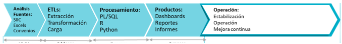
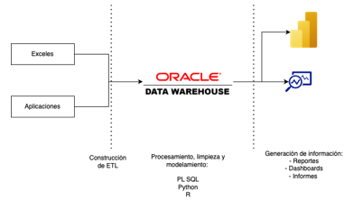
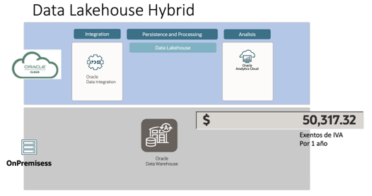
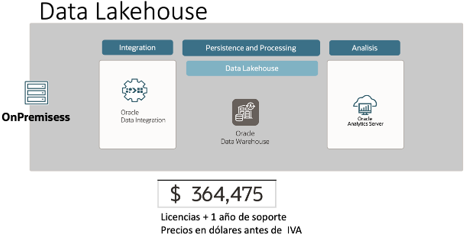

Indice
- Indice ....................................................................................... 1
- Proyecto 1: Creacion de Bodega de Datos Corporaativa ........ 1
- Arquitectura de alto nivel propuesta.............................. 1
- Opcion 1: Hibrida.......................................................... 4
Proyecto 1: Creacion de Bodega de Datos Corporativos
La implementación de una Bodega de Datos Corporativa, que permita agregar los datos de las
fuentes de datos estructuradas de la subsecretaría, y a partir de allí generar informes. El cronograma
propuesto se muestra a continuación:

Arquitectura de alto nivel propuesta

Estimacion economica herramientas y licencias - 1 año
Herramientas a usar:
| Herramienta: |
Descripcion: |
| Oracle Dara Integration (ODI) |
- Integracion de datos: Permite integrar datos de
múltiples fuentes, como bases de datos relacionales,
aplicaciones empresariales, archivos planos y servicios
web, en un repositorio centralizado.
- Transformacion de datos: Proporciona capacidades
avanzadas de transformación de datos para limpiar,
enriquecer y modificar datos según sea necesario antes
de cargarlos en el destino final.
- Carga de datos: Facilita la carga de datos procesados
desde el repositorio centralizado a diferentes destinos,
como bases de datos de producción, data warehouses,
data lakes, entre otros.
- Gestion de procesos ETL: Permite diseñar, programar y
ejecutar procesos ETL (Extract, Transform, Load) para
mover datos de forma automatizada y gestionarlos de
manera eficiente.
- Automatizacion: Proporciona capacidades de
automatización para ejecutar procesos de integración
de datos de forma programada y periódica, lo que
ayuda a mantener los datos actualizados.
- Monitorizacion y gestion: Ofrece herramientas para
supervisar y gestionar los procesos de integración de
datos, así como para diagnosticar y solucionar
problemas que puedan surgir durante la ejecución de
los mismos.
|
| Oracle Analytics Cloud |
- Analisis de datos avanzados: Permite realizar análisis
avanzados de datos mediante funciones como análisis
predictivo, análisis de regresión, clustering y
segmentación.
- Visualizacion de datos: Ofrece herramientas para crear
visualizaciones interactivas y tableros de control
(dashboards) que ayudan a comprender mejor los datos
y a comunicar información de manera efectiva.
- Autoexploracion de datos: Permite a los usuarios
explorar y analizar datos de forma autónoma, sin
necesidad de conocimientos técnicos avanzados,
gracias a funciones de autoexploración y
recomendaciones inteligentes.
- Intehracion de datos: Permite integrar datos de
múltiples fuentes, como bases de datos, aplicaciones en
la nube, archivos planos y servicios web, para obtener
una visión unificada de la información.
- Seguridad y gobierno de datos: Ofrece funciones
avanzadas de seguridad y gobierno de datos para
garantizar la privacidad, integridad y confiabilidad de la
información.
- Colaboracion y comparticion: Facilita la colaboración
entre equipos al permitir compartir visualizaciones,
tableros de control y análisis de datos de manera segura
y en tiempo real.
|
| Oracle Data Weewhouse |
- Consolidacion de datos: Permite consolidar datos de
múltiples fuentes en un único repositorio de datos, lo
que facilita el análisis y la generación de informes
integrales.
- Analisis de datos: Proporciona herramientas y
capacidades avanzadas para el análisis de datos,
incluyendo consultas complejas, análisis predictivo y
minería de datos.
- Generacion de informes: Facilita la creación de
informes y tableros de control (dashboards)
interactivos para visualizar y comunicar la información
de manera efectiva.
- Optimizacion de consultas: Utiliza técnicas como
particionamiento, indexación y almacenamiento en
columnas para optimizar el rendimiento de las
consultas sobre grandes volúmenes de datos.
- Integracion con herramientas de analisis: Se integra
con herramientas de análisis y visualización de datos
para facilitar la exploración y el análisis de datos por
parte de los usuarios finales.
- Gestion de metadatos: Proporciona capacidades
avanzadas de gestión de metadatos para facilitar la
comprensión y el uso de los datos almacenados en el
almacén de datos.
|
| Oracle Data Lakehouse |
- Almacenamiento escalable: Permite almacenar
grandes volúmenes de datos de manera escalable y
eficiente, utilizando tecnologías de almacenamiento
como Hadoop Distributed File System (HDFS) y Object
Storage.
- Procesamiento de datos: Ofrece capacidades de
procesamiento de datos para transformar, limpiar y
preparar los datos para su análisis, utilizando
herramientas como Apache Spark y Apache Hive.
- Integracion de datos: Facilita la integración de datos de
múltiples fuentes, incluyendo bases de datos
relacionales, sistemas ERP y aplicaciones en la nube,
para obtener una vista unificada de la información.
- Analisis avanzado: Proporciona herramientas y
capacidades avanzadas para el análisis de datos,
incluyendo análisis predictivo, machine learning y
análisis de texto.
- Seguridad y gobierno de datos: Ofrece funciones
avanzadas de seguridad y gobierno de datos para
proteger la información y garantizar su integridad y
confiabilidad.
|
Opcion 1: Hibrida

Se propone utilizar herramientas de procesamiento de información en la nube, específicamente
Oracle Data Integration (ODI) y Oracle Analytics Cloud. Esta estrategia busca evitar el pago de
licencias on-premise, centrándose únicamente en el uso de estas herramientas en la nube. Es
importante destacar que, a pesar de utilizar herramientas en la nube, los resultados de los
procesamientos se almacenarán en las bases de datos on-premise.
Nota: Se recomienda aumentar la cantidad de procesadores licenciados, ya que se espera un mayor
procesamiento en la base de datos. Esta medida garantizará una ejecución eficiente y rápida de los
procesos, optimizando así el rendimiento del sistema y la disponibilidad de los datos.
Opcion 2: On-premise

En esta segunda opción, se plantea la instalación de todas las licencias y la infraestructura necesaria
en el entorno on-premise de la entidad. Esta elección tiene como objetivo principal garantizar un
mayor control y gestión de los recursos, así como una mayor seguridad y confidencialidad de los
datos, al estar alojados en los servidores internos de la organización.
Nota: Se recomienda aumentar la cantidad de procesadores licenciados, ya que se espera un mayor
procesamiento en la base de datos. Esta medida garantizará una ejecución eficiente y rápida de los
procesos, optimizando así el rendimiento del sistema y la disponibilidad de los datos.
Descargo de responsabilidades: La estimación presentada tiene como objetivo servir como propuesta
de inversión y evaluación. No obstante, no puede considerarse como una cotización oficial, ya que
estos precios son ofrecidos directamente por Oracle. Además, es importante tener en cuenta que
la falta de información completa, como la cantidad de datos a procesar, puede dar lugar a
variaciones en los precios. Por lo tanto, se trata de un precio aproximado y sujeto a cambios en
función de la información específica proporcionada.
Recurso humano:
Un proyecto de bodega de datos (data warehouse) suele requerir una variedad de roles para
garantizar su éxito. A continuación, se describen los sugeridos para estar involucrados en el proyecto
en la SDDE:
| Rol |
Descripcion |
Salario |
| Gerente del proyecto |
- Coordinar todas las fases del
proyecto CRISP-DM.
- Supervisar la asignación de
recursos y la gestión del tiempo.
- Garantizar que se alcancen los
objetivos del proyecto.
|
$9.500.000 |
Experto en el Dominio/Analista requerimientos:
Medio tiempo
|
|
$7.500.000 |
| Científico de Datos/Analista de Datos |
- Realizar la exploración y
preparación de datos.
- Seleccionar y aplicar técnicas de
modelado.
- Evaluar y validar los modelos
resultantes.
|
$9.500.000 |
| Ingeniero de datos |
- Encargarse de la extracción y
transformación de datos (ETL).
- Diseñar y gestionar el almacén de
datos.
- Colaborar con el científico de
datos en la preparación de datos.
|
$9.500.000 |
Especialista en Evaluación y Validación
Medio tiempo
|
- Definir las métricas de evaluación
del modelo.
- Realizar pruebas y validaciones
de modelos y resultados.
- Asegurar la calidad de los
resultados antes de la
implementación.
Compartido con el de SIS
|
$9.500.000 |
| Ingeniero BI |
- Crear informes y visualizaciones
comprensibles.
- Colaborar con el experto en el
dominio para presentar los
resultados de manera efectiva.
- Diseñar dashboards para el
seguimiento continuo.
|
$9.500.000 |
| Desarrollador |
- Implementar soluciones
tecnológicas necesarias para el
proyecto.
- Integrar modelos y soluciones en
el entorno de producción.
- Colaborar en el desarrollo de
herramientas y servicios.
|
$9.500.000 |